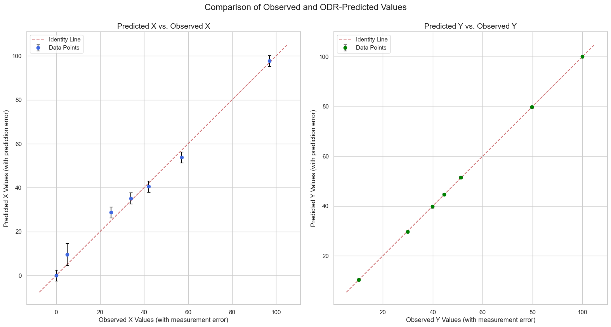
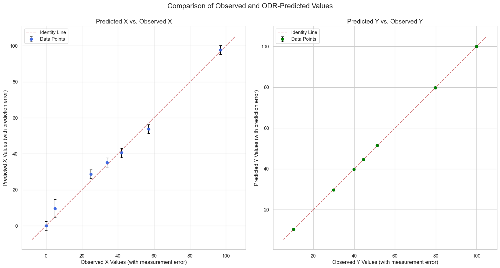
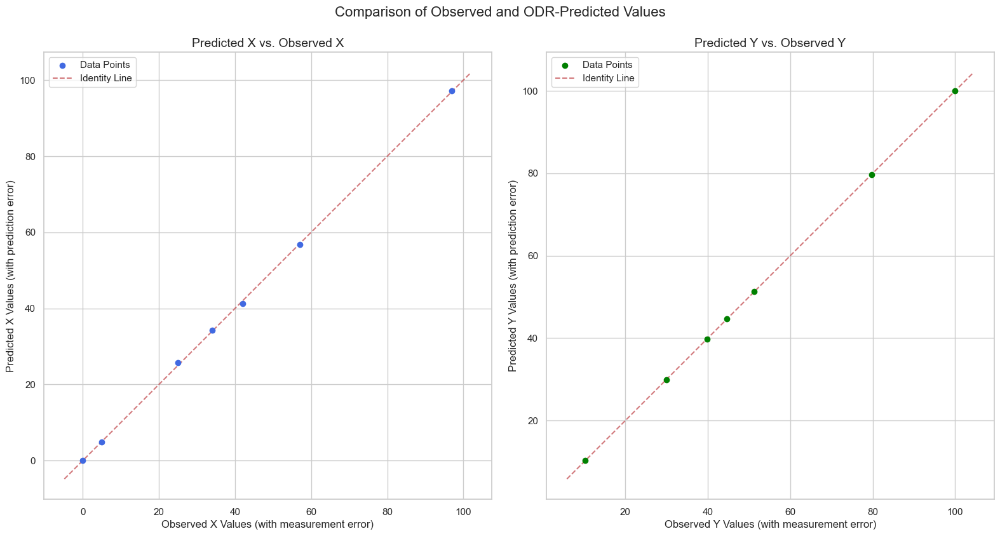
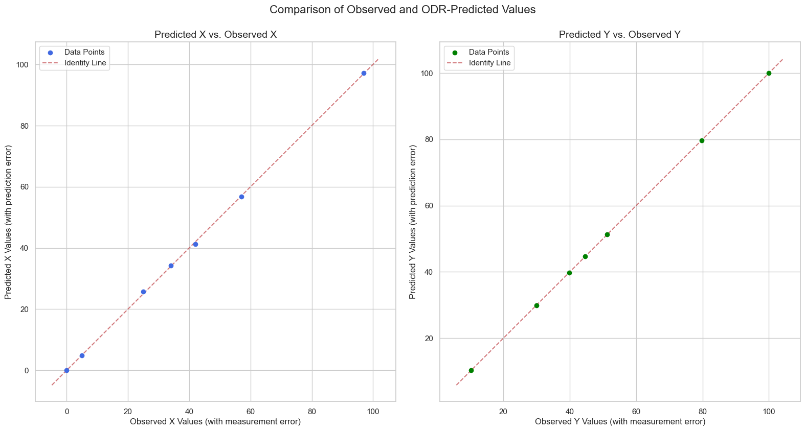

ODR - Code Examples#
General Investigation of ODR#
import numpy as np
import matplotlib.pyplot as plt
from scipy.odr import ODR, Model, RealData
import scipy.stats as stats
import seaborn as sns
def model_function(beta, x):
"""
The custom function to approximate the data.
f(x; A, B) = A * (np.exp(-B * x) - 1) + 100
Note: The signature is now (beta, x) for scipy.odr.
"""
A, B = beta
return A * (np.exp(-B * x) - 1) + 100
# Dataset 3
x = np.array([0, 23, 51, 98, 196, 292, 401])
y_obs = np.array([100, 87.8, 77, 65.7, 50.9, 46.5, 44.4])
sigma_x = np.full_like(x, 2.0, dtype=float)
sigma_y = np.full_like(y_obs, 0.5, dtype=float)
initial_guess = [50, 0.01]
results = {}
# Define the ODR model and data
odr_model = Model(model_function)
odr_data = RealData(x, y_obs, sx=sigma_x, sy=sigma_y)
# Instantiate and run the ODR fit
odr_instance = ODR(odr_data, odr_model, beta0=initial_guess)
output = odr_instance.run()
output.pprint()
Beta: [5.67694275e+01 9.88335260e-03]
Beta Std Error: [4.26741666e-01 2.63972932e-04]
Beta Covariance: [[ 2.41744445e-01 -1.18588964e-04]
[-1.18588964e-04 9.25007382e-08]]
Residual Variance: 0.7533097575791786
Inverse Condition #: 0.17698951436366908
Reason(s) for Halting:
Sum of squares convergence
Inverse Condition Number#
The “Inverse Condition #” is the reciprocal (1/x) of the condition number. The condition number itself is a measure of how sensitive the solution (the estimated parameters of your model) is to changes in the input data.
A large Inverse Condition Number (close to 1) indicates a well-conditioned problem. This is desirable and suggests that small changes in your input data will only cause small changes in the estimated parameters.
Our result of approximately 0.177 is in a moderate range - it’s not ideal (e.g., >0.5 would be better for high precision), but it’s far from problematic levels (e.g., <0.01), especially for a small dataset like ours. No major numerical instability is indicated here, and the fit should be reliable for practical purposes (for practical purposes, as long as inverse condition number isn’t extremely close to zero, it’s generally acceptable).
A small Inverse Condition Number (close to 0) points to an ill-conditioned problem. In such cases, minor variations in the input data could lead to significant changes in the determined parameters, making the solution less reliable.
In essence, this number helps you gauge the numerical stability and reliability of the parameter estimates provided by the Orthogonal Distance Regression (ODR) fit.
Reason(s) for Halting: Sum of Squares Convergence#
This indicates why the iterative fitting process stopped. The ODR algorithm works by iteratively adjusting the parameters (A and B in your model) to minimize the sum of the squared weighted orthogonal distances from the data points to the fitted curve.
“Sum of squares convergence” means that the algorithm terminated because the improvements in the sum of squared residuals from one iteration to the next became negligibly small. This is a standard and successful stopping criterion for such optimization routines. It implies that the algorithm has found a stable solution where further adjustments to the parameters do not significantly improve the fit to the data.
fit_params = output.beta
print(f"Fitted parameters (output.beta): {fit_params}")
sd_beta = output.sd_beta
print(f"Standard deviations of the parameters (output.sd_beta): {sd_beta}")
sd_beta_2 = np.sqrt(np.diag(output.cov_beta * output.res_var))
print(f"Standard deviations of the parameters (alternative calculation using cov_beta): {sd_beta_2}")
inv_cond_num = output.inv_condnum
print(f"Inverse condition number (output.inv_condnum): {inv_cond_num}")
Fitted parameters (output.beta): [5.67694275e+01 9.88335260e-03]
Standard deviations of the parameters (output.sd_beta): [4.26741666e-01 2.63972932e-04]
Standard deviations of the parameters (alternative calculation using cov_beta): [4.26741666e-01 2.63972932e-04]
Inverse condition number (output.inv_condnum): 0.17698951436366908
# Store the original data in the results dictionary for plotting later
results['original_x'] = x
results['original_y'] = y_obs
results['original_sigma_x'] = sigma_x
results['original_sigma_y'] = sigma_y
results['original_weights_x'] = 1.0 / (sigma_x**2)
results['original_weights_y'] = 1.0 / (sigma_y**2)
# Store results from ODR's Output object
results['odr_output'] = output
results['fit_params'] = output.beta
results['std_errs'] = output.sd_beta
results['cov_beta'] = output.cov_beta
results['number_of_observations'] = len(x)
results['number_of_parameters'] = len(output.beta)
results['degrees_of_freedom'] = results['number_of_observations'] - results['number_of_parameters']
results['inverse_condition_number'] = output.inv_condnum
t_values = results['fit_params'] / results['std_errs']
p_values = stats.t.sf(np.abs(t_values), df=results['degrees_of_freedom']) * 2
results['t_values'] = t_values
results['p_values'] = p_values
print(f"t-values: {t_values}")
print(f"p-values: {p_values}")
t-values: [133.02996178 37.44078054]
p-values: [4.55295786e-10 2.56015184e-07]
delta_x = output.delta
results['delta_x'] = delta_x
print(f"Array of estimated errors in input variables, of same shape as x (output.delta):\n{delta_x}")
epsilon_y = output.eps
results['epsilon_y'] = epsilon_y
print(f"Array of estimated errors in response variables, of same shape as y (output.eps):\n{epsilon_y}")
Array of estimated errors in input variables, of same shape as x (output.delta):
[ 0. 1.12128483 1.00051757 -1.82517415 0.59658578 -0.05011438
-0.01544762]
Array of estimated errors in response variables, of same shape as y (output.eps):
[ 0. 0.15853071 0.18633185 -0.52598787 0.46385468 -0.09998956
-0.09054455]
x_pred = output.xplus
results['x_pred'] = output.xplus
print(f"Array of predicted x values (output.xplus):\n{x_pred}")
x_pred_2 = x + output.delta
print(f"Array of predicted x values (x + output.delta):\n{x_pred_2}")
y_pred = output.y
results['y_pred'] = output.y
print(f"\nArray of predicted y values (output.y):\n{y_pred}")
y_pred_2 = model_function(results['fit_params'], x + delta_x)
print(f"Array of predicted y values (model_function with (x + delta_x) argument):\n{y_pred_2}")
Array of predicted x values (output.xplus):
[ 0. 24.12128483 52.00051757 96.17482585 196.59658578
291.94988562 400.98455238]
Array of predicted x values (x + output.delta):
[ 0. 24.12128483 52.00051757 96.17482585 196.59658578
291.94988562 400.98455238]
Array of predicted y values (output.y):
[100. 87.95853071 77.18633185 65.17401213 51.36385468
46.40001044 44.30945545]
Array of predicted y values (model_function with (x + delta_x) argument):
[100. 87.95853071 77.18633185 65.17401213 51.36385468
46.40001044 44.30945545]
Predicted values of x and y#
output.xplusrepresents the “predicted” or adjusted x-values. These are computed as the originalxplus the estimated errors/adjustments in the input variables (output.delta), i.e.,xplus = x + delta. They correspond to the x-coordinates on the fitted curve that are closest (in an orthogonal sense) to each observed data point(x[i], y_obs[i]).output.yrepresents the predicted y-values, which are the model’s evaluations at those adjusted x-values:y = model_function(beta, xplus). These are the y-coordinates on the fitted curve corresponding to the same closest points.
Together, the pairs (output.xplus[i], output.y[i]) are the projections (feet of the perpendiculars) of our observed data points onto the fitted curve. This differs from ordinary least squares regression (where errors are assumed only in y, and predictions are simply model_function(beta, x) at the original x-values). In ODR, since errors are considered in both x and y, these adjusted predictions account for uncertainties in both directions, minimizing the orthogonal distances.
Our code already demonstrates this equivalence with the alternative calculations:
x_pred_2 = x + output.deltamatchesoutput.xplus.y_pred_2 = model_function(fit_params, x + delta_x)matchesoutput.y.
sum_square_delta = output.sum_square_delta
print(f"Sum of squares of delta error (output.sum_square_delta): {sum_square_delta:.4f}")
delta_errors = output.delta
manual_sum_square_delta = np.sum((delta_errors / sigma_x)**2)
print(f"Manually calculated sum_square_delta: {manual_sum_square_delta:.4f}")
sum_square_eps = output.sum_square_eps
print(f"\nSum of squares of epsilon error (output.sum_square_eps): {sum_square_eps:.4f}")
epsilon_errors = output.eps
manual_sum_square_eps = np.sum((epsilon_errors / sigma_y)**2)
print(f"Manually calculated sum_square_eps: {manual_sum_square_eps:.4f}")
Sum of squares of delta error (output.sum_square_delta): 1.4871
Manually calculated sum_square_delta: 1.4871
Sum of squares of epsilon error (output.sum_square_eps): 2.2795
Manually calculated sum_square_eps: 2.2795
sum_square = output.sum_square
results['chi_squared_odr'] = output.sum_square
print(f"Chi-squared (output.sum_square): {sum_square:.4f}")
res_var = output.res_var
results['reduced_chi_squared_odr'] = output.res_var
print(f"Reduced Chi-squared (output.res_var): {res_var:.4f}")
# Calculate Chi-Squared manually as per the formula
# ODR output provides delta (residuals in x) and eps (residuals in y)
chi_squared_manual = np.sum((output.delta / sigma_x)**2 + (output.eps / sigma_y)**2)
results['chi_squared_manual'] = chi_squared_manual
print(f"Chi-squared (manual calculation): {chi_squared_manual:.4f}")
# Reduced Chi-Squared (manual calculation)
reduced_chi_squared_manual = chi_squared_manual / results['degrees_of_freedom']
results['reduced_chi_squared_manual'] = reduced_chi_squared_manual
print(f"Reduced Chi-squared (manual calculation): {reduced_chi_squared_manual:.4f}")
Chi-squared (output.sum_square): 3.7665
Reduced Chi-squared (output.res_var): 0.7533
Chi-squared (manual calculation): 3.7665
Reduced Chi-squared (manual calculation): 0.7533
# Information Criteria (using the log-likelihood for ODR, which is implicitly
# based on the chi-squared statistic, assuming a Gaussian error model).
n = results['number_of_observations']
p = results['number_of_parameters']
# A log-likelihood for ODR, based on the chi-squared value.
llf = - n * np.log(2 * np.pi) - np.sum(np.log(sigma_x)) - np.sum(np.log(sigma_y)) - 0.5 * results['chi_squared_odr']
aic = -2 * llf + 2 * p
bic = -2 * llf + np.log(n) * p
aicc = aic + (2 * p * (p + 1)) / (n - p - 1)
results['log_likelihood'] = llf
results['aic'] = aic
results['bic'] = bic
results['aicc'] = aicc
print('Maximum Log-Likelihood:', llf)
print('AIC:', aic)
print('BIC:', bic)
print('AICC:', aicc)
Maximum Log-Likelihood: -14.748413858813365
AIC: 33.49682771762673
BIC: 33.38864801573735
AICC: 36.49682771762673
General Methods for ODR Analysis#
import numpy as np
import matplotlib.pyplot as plt
from scipy.odr import ODR, Model, RealData
import scipy.stats as stats
import seaborn as sns
from tabulate import tabulate
def analyze_odr(x, y_obs, sigma_x, sigma_y, function, initial_guess):
"""
Performs an Orthogonal Distance Regression (ODR) curve fit and calculates
various goodness-of-fit and error metrics.
Args:
x (np.array): The independent variable data.
y_obs (np.array): The observed dependent variable data.
sigma_x (np.array): The standard deviations of the x points.
sigma_y (np.array): The standard deviations of the y_obs points.
function (callable): The function to fit to the data.
initial_guess (list): The initial guess for the function parameters.
Returns:
dict: A dictionary containing all the calculated results.
"""
results = {}
# Define the ODR model and data
odr_model = Model(function)
odr_data = RealData(x, y_obs, sx=sigma_x, sy=sigma_y)
# Instantiate and run the ODR fit
odr_instance = ODR(odr_data, odr_model, beta0=initial_guess)
output = odr_instance.run()
# Store the original data in the results dictionary for plotting later
results['original_x'] = x
results['original_y'] = y_obs
results['original_sigma_x'] = sigma_x
results['original_sigma_y'] = sigma_y
results['original_weights_x'] = 1.0 / (sigma_x**2)
results['original_weights_y'] = 1.0 / (sigma_y**2)
# Store results from ODR's Output object
results['odr_output'] = output
results['fit_params'] = output.beta
results['std_errs'] = output.sd_beta
results['cov_beta'] = output.cov_beta
results['number_of_observations'] = len(x)
results['number_of_parameters'] = len(output.beta)
results['degrees_of_freedom'] = results['number_of_observations'] - results['number_of_parameters']
results['inverse_condition_number'] = output.inv_condnum
# Calculate t-values and p-values
t_values = results['fit_params'] / results['std_errs']
p_values = stats.t.sf(np.abs(t_values), df=results['degrees_of_freedom']) * 2
results['t_values'] = t_values
results['p_values'] = p_values
results['delta_x'] = output.delta
results['epsilon_y'] = output.eps
results['x_pred'] = output.xplus
results['y_pred'] = output.y
# Chi-Squared and Reduced Chi-Squared from ODR output
results['chi_squared_odr'] = output.sum_square
results['reduced_chi_squared_odr'] = output.res_var
# Information Criteria (using the log-likelihood for ODR, which is implicitly
# based on the chi-squared statistic, assuming a Gaussian error model).
n = results['number_of_observations']
p = results['number_of_parameters']
# A log-likelihood for ODR, based on the chi-squared value.
llf = - n * np.log(2 * np.pi) - np.sum(np.log(sigma_x)) - np.sum(np.log(sigma_y)) - 0.5 * results['chi_squared_odr']
aic = -2 * llf + 2 * p
bic = -2 * llf + np.log(n) * p
aicc = aic + (2 * p * (p + 1)) / (n - p - 1)
results['log_likelihood'] = llf
results['aic'] = aic
results['bic'] = bic
results['aicc'] = aicc
return results
def print_metrics(results):
"""
Prints the calculated metrics from the results dictionary for ODR.
"""
output = results['odr_output']
fit_params = results['fit_params']
std_errs = results['std_errs']
t_values = results['t_values']
p_values = results['p_values']
n = results['number_of_observations']
p = results['number_of_parameters']
print("--- ODR Fit Results ---")
output.pprint()
print("\n--- Summary of Results ---")
for i, (param, err) in enumerate(zip(fit_params, std_errs)):
print(f"Parameter {chr(ord('A') + i)}: {param:.5f} +/- {err:.5f}")
print(f" T-value: {t_values[i]:.8f}, P-value: {p_values[i]:.8f}")
print("\n--- Model Fit Statistics ---")
print(f"\nNumber of Observations (n): {n}")
print(f"Number of Parameters (p): {p}")
print(f"Degrees of Freedom (n-p): {results['degrees_of_freedom']}")
print("\n--- Goodness-of-Fit & Error Metrics ---")
print(f"Chi-Squared (from ODR): {results['chi_squared_odr']:.4f}")
print(f"Reduced Chi-Squared (from ODR): {results['reduced_chi_squared_odr']:.4f}")
print("\n--- Information Criteria ---")
print(f"Maximum Log-Likelihood: {results['log_likelihood']:.4f}")
print(f"AIC (Akaike Information Criterion): {results['aic']:.4f}")
print(f"BIC (Bayesian Information Criterion): {results['bic']:.4f}")
print(f"AICc (Corrected AIC): {results['aicc']:.4f}")
print("\n--- Comparison of Original and Predicted Data Points ---")
# Unpack data points
x_orig = results['original_x']
y_orig = results['original_y']
x_pred = results['x_pred']
y_pred = results['y_pred']
# Prepare data for the table
comparison_data = zip(x_orig, x_pred, y_orig, y_pred)
comp_headers = ["Original X", "Predicted X (x_plus)", "Original Y", "Predicted Y (fit)"]
# Print the formatted table
print(tabulate(comparison_data, headers=comp_headers, floatfmt=".4f"))
def draw_curve_fit(results, model_function):
"""
Visualizes the ODR fit with a 95% confidence band.
Args:
results (dict): The dictionary returned by the analyze_odr function.
model_function (callable): The model function used for the fit.
"""
# --- 1. Unpack data from the results dictionary ---
x_data = results["original_x"]
y_data = results["original_y"]
sigma_x = results["original_sigma_x"]
sigma_y = results["original_sigma_y"]
popt = results['fit_params']
perr = results['std_errs']
cov_beta = results['cov_beta']
df = results['degrees_of_freedom']
# --- 2. Set up the plot ---
plt.figure(figsize=(14, 8))
sns.set_theme(style="whitegrid")
# --- 3. Plot the curve fit ---
# Plot original data with error bars
plt.errorbar(
x_data, y_data,
xerr=sigma_x, yerr=sigma_y,
fmt='o', color='royalblue', ecolor='black', capsize=3,
label="Original Data", zorder=5
)
# Generate points for the fitted curve and confidence band
x_plot = np.linspace(min(x_data), max(x_data) * 1.05, 400)
y_plot = model_function(popt, x_plot)
# --- 4. Calculate and plot the 95% confidence band ---
def jacobian(beta, x):
A, B = beta
# Partial derivatives of the model function w.r.t. parameters A and B
d_dA = np.exp(-B * x) - 1
d_dB = -A * x * np.exp(-B * x)
return np.array([d_dA, d_dB]).T
J = jacobian(popt, x_plot)
# Variance of the predicted y values
var_y_plot = np.sum(J @ cov_beta * J, axis=1)
# Standard error of the predicted y values
se_y_plot = np.sqrt(var_y_plot)
# Get the critical t-value for 95% confidence
t_val = stats.t.ppf(0.975, df)
# Confidence interval half-width
ci = t_val * se_y_plot
# Plot the confidence band
plt.fill_between(
x_plot, y_plot - ci, y_plot + ci,
color='red', alpha=0.2, label="95% Confidence Band"
)
# Plot the fitted curve
label_text = (
f"ODR Fitted Curve\n"
f"A={popt[0]:.3f} ± {perr[0]:.3f}\n"
f"B={popt[1]:.5f} ± {perr[1]:.5f}"
)
plt.plot(x_plot, y_plot, color='red', label=label_text)
# --- 5. Configure title, labels, and final layout ---
title = f"Orthogonal Distance Regression (ODR) Fit\nReduced $\\chi^2$ = {results['reduced_chi_squared_odr']:.4f}"
plt.title(title, fontsize=14)
plt.xlabel("X-Value")
plt.ylabel("Y-Value")
plt.legend()
plt.grid(True)
plt.xlim(xmin=min(x_data) - 5)
plt.ylim(ymin=min(y_data) - 10, ymax=max(y_data) + 10)
plt.tight_layout()
plt.show()
def draw_curve_fit_simple(results, model_function):
"""
Visualizes the ODR fit with a 95% confidence band.
Args:
results (dict): The dictionary returned by the analyze_odr function.
model_function (callable): The model function used for the fit.
"""
# --- 1. Unpack data from the results dictionary ---
x_data = results["original_x"]
y_data = results["original_y"]
sigma_x = results["original_sigma_x"]
sigma_y = results["original_sigma_y"]
popt = results['fit_params']
perr = results['std_errs']
# --- 2. Set up the plot ---
plt.figure(figsize=(14, 8))
sns.set_theme(style="whitegrid")
# --- 3. Plot the curve fit ---
# Plot original data with error bars
plt.errorbar(
x_data, y_data,
xerr=sigma_x, yerr=sigma_y,
fmt='o', color='royalblue', ecolor='black', capsize=3,
label="Original Data", zorder=5
)
# Generate points for the fitted curve and confidence band
x_plot = np.linspace(min(x_data), max(x_data) * 1.05, 400)
y_plot = model_function(popt, x_plot)
# Plot the fitted curve
label_text = (
f"ODR Fitted Curve\n"
f"A={popt[0]:.3f} ± {perr[0]:.3f}\n"
f"B={popt[1]:.5f} ± {perr[1]:.5f}"
)
plt.plot(x_plot, y_plot, color='red', label=label_text)
# --- 5. Configure title, labels, and final layout ---
title = f"Orthogonal Distance Regression (ODR) Fit\nReduced $\\chi^2$ = {results['reduced_chi_squared_odr']:.4f}"
plt.title(title, fontsize=14)
plt.xlabel("X-Value")
plt.ylabel("Y-Value")
plt.legend()
plt.grid(True)
plt.xlim(xmin=min(x_data) - 5)
plt.ylim(ymin=min(y_data) - 10, ymax=max(y_data) + 10)
plt.tight_layout()
plt.show()
def plot_predicted_vs_observed(results, show_errors=False):
"""
Creates scatter plots to compare observed vs. predicted values for x and y,
with an option to display error bars for both observed and predicted values.
Args:
results (dict): The dictionary returned by the analyze_odr function.
show_errors (bool): If True, displays error bars on the plots.
The results dict must contain 'sd_xplus' and 'sd_y'.
"""
# --- 1. Unpack the required data from the results dictionary ---
x_obs = results['original_x']
y_obs = results['original_y']
x_pred = results['x_pred']
y_pred = results['y_pred']
# --- 2. Set up the figure with two subplots ---
fig, (ax1, ax2) = plt.subplots(1, 2, figsize=(16, 8))
sns.set_theme(style="whitegrid")
# --- 3. First subplot: Observed X vs. Predicted X ---
if show_errors:
sigma_x = results["original_sigma_x"]
if sigma_x is None:
print("Warning: 'original_sigma_x' not in results. Cannot plot predicted X errors.")
ax1.scatter(x_obs, x_pred, c='royalblue', zorder=10, label='Data Points')
else:
ax1.errorbar(
x_obs, x_pred, yerr=sigma_x,
fmt='o', ecolor='black', capsize=3, color='royalblue', zorder=10, label='Data Points'
)
else:
ax1.scatter(x_obs, x_pred, c='royalblue', zorder=10, label='Data Points')
# Create the line of identity (y=x)
lims_x = [
min(ax1.get_xlim()[0], ax1.get_ylim()[0], min(x_obs), min(x_pred)),
max(ax1.get_xlim()[1], ax1.get_ylim()[1], max(x_obs), max(x_pred)),
]
ax1.plot(lims_x, lims_x, 'r--', alpha=0.75, zorder=5, label='Identity Line')
ax1.set_title('Predicted X vs. Observed X', fontsize=14)
ax1.set_xlabel('Observed X Values (with measurement error)', fontsize=12)
ax1.set_ylabel('Predicted X Values (with prediction error)', fontsize=12)
ax1.set_aspect('equal', 'box')
ax1.grid(True)
ax1.legend()
# --- 4. Second subplot: Observed Y vs. Predicted Y ---
if show_errors:
sigma_y = results["original_sigma_y"]
if sigma_y is None:
print("Warning: 'original_sigma_y' not in results. Cannot plot predicted Y errors.")
ax2.scatter(y_obs, y_pred, c='green', zorder=10, label='Data Points')
else:
ax2.errorbar(
y_obs, y_pred, yerr=sigma_y,
fmt='o', ecolor='black', capsize=3, color='green', zorder=10, label='Data Points'
)
else:
ax2.scatter(y_obs, y_pred, c='green', zorder=10, label='Data Points')
# Create the line of identity
lims_y = [
min(ax2.get_xlim()[0], ax2.get_ylim()[0], min(y_obs), min(y_pred)),
max(ax2.get_xlim()[1], ax2.get_ylim()[1], max(y_obs), max(y_pred)),
]
ax2.plot(lims_y, lims_y, 'r--', alpha=0.75, zorder=5, label='Identity Line')
ax2.set_title('Predicted Y vs. Observed Y', fontsize=14)
ax2.set_xlabel('Observed Y Values (with measurement error)', fontsize=12)
ax2.set_ylabel('Predicted Y Values (with prediction error)', fontsize=12)
ax2.set_aspect('equal', 'box')
ax2.grid(True)
ax2.legend()
# --- 5. Final adjustments and display ---
fig.suptitle('Comparison of Observed and ODR-Predicted Values', fontsize=16, y=1.02)
plt.tight_layout()
plt.show()
Usage of Methods. Dataset 3#
def model_function(beta, x):
"""
The custom function to approximate the data.
f(x; A, B) = A * (np.exp(-B * x) - 1) + 100
Note: The signature is now (beta, x) for scipy.odr.
"""
A, B = beta
return A * (np.exp(-B * x) - 1) + 100
# Dataset 3
x = np.array([0, 23, 51, 98, 196, 292, 401])
y_obs = np.array([100, 87.8, 77, 65.7, 50.9, 46.5, 44.4])
sigma_y = np.full_like(y_obs, 0.5, dtype=float)
sigma_x = np.full_like(x, 2.0, dtype=float)
initial_guess = [50, 0.01]
# Analyze the curve fit and get results using ODR
odr_results = analyze_odr(x, y_obs, sigma_x, sigma_y, model_function, initial_guess)
# Print the metrics
print_metrics(odr_results)
# Draw the curve fit plot
draw_curve_fit(odr_results, model_function)
# Plot predicted vs observed values
plot_predicted_vs_observed(odr_results, show_errors=True)
--- ODR Fit Results ---
Beta: [5.67694275e+01 9.88335260e-03]
Beta Std Error: [4.26741666e-01 2.63972932e-04]
Beta Covariance: [[ 2.41744445e-01 -1.18588964e-04]
[-1.18588964e-04 9.25007382e-08]]
Residual Variance: 0.7533097575791786
Inverse Condition #: 0.17698951436366908
Reason(s) for Halting:
Sum of squares convergence
--- Summary of Results ---
Parameter A: 56.76943 +/- 0.42674
T-value: 133.02996178, P-value: 0.00000000
Parameter B: 0.00988 +/- 0.00026
T-value: 37.44078054, P-value: 0.00000026
--- Model Fit Statistics ---
Number of Observations (n): 7
Number of Parameters (p): 2
Degrees of Freedom (n-p): 5
--- Goodness-of-Fit & Error Metrics ---
Chi-Squared (from ODR): 3.7665
Reduced Chi-Squared (from ODR): 0.7533
--- Information Criteria ---
Maximum Log-Likelihood: -14.7484
AIC (Akaike Information Criterion): 33.4968
BIC (Bayesian Information Criterion): 33.3886
AICc (Corrected AIC): 36.4968
--- Comparison of Original and Predicted Data Points ---
Original X Predicted X (x_plus) Original Y Predicted Y (fit)
------------ ---------------------- ------------ -------------------
0.0000 0.0000 100.0000 100.0000
23.0000 24.1213 87.8000 87.9585
51.0000 52.0005 77.0000 77.1863
98.0000 96.1748 65.7000 65.1740
196.0000 196.5966 50.9000 51.3639
292.0000 291.9499 46.5000 46.4000
401.0000 400.9846 44.4000 44.3095


def model_function(beta, x):
"""
The custom function to approximate the data.
f(x; A, B) = A * (np.exp(-B * x) - 1) + 100
Note: The signature is now (beta, x) for scipy.odr.
"""
A_1 = 56.769
B_1 = 0.00988
A, B = beta
return A_1 * (np.exp(-B_1 * x) - 1) + A * (np.exp(-B * x) - 1) + 100
# Dataset 1
x = np.array([0, 5, 25, 34, 42, 57, 97])
y_obs = np.array([100, 79.7, 51.3, 44.6, 39.8, 29.9, 10.3])
sigma_y = np.full_like(y_obs, 0.5, dtype=float)
sigma_x = np.full_like(x, 2.5, dtype=float)
sigma_x[1] = 5.0
initial_guess = [50, 0.01]
# Analyze the curve fit and get results using ODR
odr_results = analyze_odr(x, y_obs, sigma_x, sigma_y, model_function, initial_guess)
# Print the metrics
print_metrics(odr_results)
# Draw the curve fit plot
draw_curve_fit(odr_results, model_function)
# Plot predicted vs observed values
plot_predicted_vs_observed(odr_results, show_errors=True)
--- ODR Fit Results ---
Beta: [5.68392888e+01 3.24353590e-02]
Beta Std Error: [1.5530292 0.00331071]
Beta Covariance: [[ 2.08389467e+00 -3.73454177e-03]
[-3.73454177e-03 9.47018594e-06]]
Residual Variance: 1.1573999955312377
Inverse Condition #: 0.04920317116646627
Reason(s) for Halting:
Sum of squares convergence
--- Summary of Results ---
Parameter A: 56.83929 +/- 1.55303
T-value: 36.59898280, P-value: 0.00000029
Parameter B: 0.03244 +/- 0.00331
T-value: 9.79710400, P-value: 0.00018859
--- Model Fit Statistics ---
Number of Observations (n): 7
Number of Parameters (p): 2
Degrees of Freedom (n-p): 5
--- Goodness-of-Fit & Error Metrics ---
Chi-Squared (from ODR): 5.7870
Reduced Chi-Squared (from ODR): 1.1574
--- Information Criteria ---
Maximum Log-Likelihood: -18.0138
AIC (Akaike Information Criterion): 40.0276
BIC (Bayesian Information Criterion): 39.9194
AICc (Corrected AIC): 43.0276
--- Comparison of Original and Predicted Data Points ---
Original X Predicted X (x_plus) Original Y Predicted Y (fit)
------------ ---------------------- ------------ -------------------
0.0000 0.0000 100.0000 100.0000
5.0000 9.5626 79.7000 79.7245
25.0000 28.8027 51.3000 51.4327
34.0000 35.1839 44.6000 44.6481
42.0000 40.4884 39.8000 39.7306
57.0000 53.7684 29.9000 29.7018
97.0000 97.7177 10.3000 10.3986
 

def plot_predicted_vs_observed(results, show_errors=False):
"""
Creates scatter plots to compare observed vs. predicted values for x and y,
with an option to display error bars for both observed and predicted values.
Args:
results (dict): The dictionary returned by the analyze_odr function.
show_errors (bool): If True, displays error bars on the plots.
The results dict must contain 'sd_xplus' and 'sd_y'.
"""
# --- 1. Unpack the required data from the results dictionary ---
x_obs = results['original_x']
y_obs = results['original_y']
x_pred = results['x_pred']
y_pred = results['y_pred']
# --- 2. Set up the figure with two subplots ---
fig, (ax1, ax2) = plt.subplots(1, 2, figsize=(16, 8))
sns.set_theme(style="whitegrid")
# --- 3. First subplot: Observed X vs. Predicted X ---
if show_errors:
sigma_x = results["original_sigma_x"]
if sigma_x is None:
print("Warning: 'original_sigma_x' not in results. Cannot plot predicted X errors.")
ax1.scatter(x_obs, x_pred, c='royalblue', zorder=10, label='Data Points')
else:
ax1.errorbar(
x_obs, x_pred, yerr=sigma_x,
fmt='o', ecolor='black', capsize=3, color='royalblue', zorder=10, label='Data Points'
)
else:
ax1.scatter(x_obs, x_pred, c='royalblue', zorder=10, label='Data Points')
# Create the line of identity (y=x)
lims_x = [
min(ax1.get_xlim()[0], ax1.get_ylim()[0], min(x_obs), min(x_pred)),
max(ax1.get_xlim()[1], ax1.get_ylim()[1], max(x_obs), max(x_pred)),
]
ax1.plot(lims_x, lims_x, 'r--', alpha=0.75, zorder=5, label='Identity Line')
ax1.set_title('Predicted X vs. Observed X', fontsize=14)
ax1.set_xlabel('Observed X Values (with measurement error)', fontsize=12)
ax1.set_ylabel('Predicted X Values (with prediction error)', fontsize=12)
ax1.set_aspect('equal', 'box')
ax1.grid(True)
ax1.legend()
# --- 4. Second subplot: Observed Y vs. Predicted Y ---
if show_errors:
sigma_y = results["original_sigma_y"]
if sigma_y is None:
print("Warning: 'original_sigma_y' not in results. Cannot plot predicted Y errors.")
ax2.scatter(y_obs, y_pred, c='green', zorder=10, label='Data Points')
else:
ax2.errorbar(
y_obs, y_pred, yerr=sigma_y,
fmt='o', ecolor='black', capsize=3, color='green', zorder=10, label='Data Points'
)
else:
ax2.scatter(y_obs, y_pred, c='green', zorder=10, label='Data Points')
# Create the line of identity
lims_y = [
min(ax2.get_xlim()[0], ax2.get_ylim()[0], min(y_obs), min(y_pred)),
max(ax2.get_xlim()[1], ax2.get_ylim()[1], max(y_obs), max(y_pred)),
]
ax2.plot(lims_y, lims_y, 'r--', alpha=0.75, zorder=5, label='Identity Line')
ax2.set_title('Predicted Y vs. Observed Y', fontsize=14)
ax2.set_xlabel('Observed Y Values (with measurement error)', fontsize=12)
ax2.set_ylabel('Predicted Y Values (with prediction error)', fontsize=12)
ax2.set_aspect('equal', 'box')
ax2.grid(True)
ax2.legend()
# --- 5. Final adjustments and display ---
fig.suptitle('Comparison of Observed and ODR-Predicted Values', fontsize=16, y=1.02)
plt.tight_layout()
plt.show()
plot_predicted_vs_observed(odr_results, show_errors=True)
def model_function(beta, x):
"""
The custom function to approximate the data.
f(x; A, B) = A * (np.exp(-B * x) - 1) + 100
Note: The signature is now (beta, x) for scipy.odr.
"""
# A_1 = 56.769
B_1 = 0.00988
A_1, A, B = beta
return A_1 * (np.exp(-B_1 * x) - 1) + A * (np.exp(-B * x) - 1) + 100
# Dataset 1
x = np.array([0, 5, 25, 34, 42, 57, 97])
y_obs = np.array([100, 79.7, 51.3, 44.6, 39.8, 29.9, 10.3])
sigma_y = np.full_like(y_obs, 0.5, dtype=float)
sigma_x = np.full_like(x, 2.0, dtype=float)
initial_guess = [56.769, 50, 0.01]
# Analyze the curve fit and get results using ODR
odr_results = analyze_odr(x, y_obs, sigma_x, sigma_y, model_function, initial_guess)
# Print the metrics
print_metrics(odr_results)
# Draw the curve fit plot
draw_curve_fit_simple(odr_results, model_function)
# Plot predicted vs observed values
plot_predicted_vs_observed(odr_results)
--- ODR Fit Results ---
Beta: [103.88824637 25.55010799 0.19522905]
Beta Std Error: [1.24956011 0.59488983 0.03870533]
Beta Covariance: [[ 1.65731942e+01 -7.51580025e+00 1.67335878e-01]
[-7.51580025e+00 3.75634090e+00 -8.96855502e-02]
[ 1.67335878e-01 -8.96855502e-02 1.59013315e-02]]
Residual Variance: 0.09421240332040559
Inverse Condition #: 0.0009228447241251511
Reason(s) for Halting:
Sum of squares convergence
--- Summary of Results ---
Parameter A: 103.88825 +/- 1.24956
T-value: 83.13985531, P-value: 0.00000013
Parameter B: 25.55011 +/- 0.59489
T-value: 42.94931078, P-value: 0.00000176
Parameter C: 0.19523 +/- 0.03871
T-value: 5.04398357, P-value: 0.00726171
--- Model Fit Statistics ---
Number of Observations (n): 7
Number of Parameters (p): 3
Degrees of Freedom (n-p): 4
--- Goodness-of-Fit & Error Metrics ---
Chi-Squared (from ODR): 0.3768
Reduced Chi-Squared (from ODR): 0.0942
--- Information Criteria ---
Maximum Log-Likelihood: -13.0536
AIC (Akaike Information Criterion): 32.1071
BIC (Bayesian Information Criterion): 31.9449
AICc (Corrected AIC): 40.1071
--- Comparison of Original and Predicted Data Points ---
Original X Predicted X (x_plus) Original Y Predicted Y (fit)
------------ ---------------------- ------------ -------------------
0.0000 0.0000 100.0000 100.0000
5.0000 4.7837 79.7000 79.6954
25.0000 25.6670 51.3000 51.3502
34.0000 34.2938 44.6000 44.6249
42.0000 41.1892 39.8000 39.7260
57.0000 56.7351 29.9000 29.8717
97.0000 97.1901 10.3000 10.3302
 

def model_function(beta, x):
"""
The custom function to approximate the data.
f(x; A, B) = A * (np.exp(-B * x) - 1) + 100
Note: The signature is now (beta, x) for scipy.odr.
"""
# A_1 = 56.769
# B_1 = 0.00988
A_1, B_1, A, B = beta
return A_1 * (np.exp(-B_1 * x) - 1) + A * (np.exp(-B * x) - 1) + 100
# Dataset 2
x = np.array([0, 19, 45, 104, 191, 294, 391])
y_obs = np.array([100, 80.4, 66.4, 50.1, 41.2, 28.5, 20.1])
sigma_y = np.full_like(y_obs, 0.5, dtype=float)
sigma_x = np.full_like(x, 2.0, dtype=float)
initial_guess = [56.769, 0.00988, 50, 0.01]
# Analyze the curve fit and get results using ODR
odr_results = analyze_odr(x, y_obs, sigma_x, sigma_y, model_function, initial_guess)
# Print the metrics
print_metrics(odr_results)
# Draw the curve fit plot
draw_curve_fit_simple(odr_results, model_function)
# Plot predicted vs observed values
plot_predicted_vs_observed(odr_results)
--- ODR Fit Results ---
Beta: [2.53713448e+02 4.53053930e-04 3.89974446e+01 3.06987722e-02]
Beta Std Error: [7.71860840e+02 1.57276072e-03 6.13338708e+00 7.45952575e-03]
Beta Covariance: [[ 1.86388581e+05 -3.79720031e-01 1.40483870e+03 -1.40898434e+00]
[-3.79720031e-01 7.73867479e-07 -2.87957172e-03 2.90053542e-06]
[ 1.40483870e+03 -2.87957172e-03 1.17690670e+01 -1.27312615e-02]
[-1.40898434e+00 2.90053542e-06 -1.27312615e-02 1.74085950e-05]]
Residual Variance: 3.196382277215617
Inverse Condition #: 5.9563264880884864e-05
Reason(s) for Halting:
Sum of squares convergence
--- Summary of Results ---
Parameter A: 253.71345 +/- 771.86084
T-value: 0.32870361, P-value: 0.76398808
Parameter B: 0.00045 +/- 0.00157
T-value: 0.28806285, P-value: 0.79205359
Parameter C: 38.99744 +/- 6.13339
T-value: 6.35822329, P-value: 0.00787193
Parameter D: 0.03070 +/- 0.00746
T-value: 4.11537855, P-value: 0.02599280
--- Model Fit Statistics ---
Number of Observations (n): 7
Number of Parameters (p): 4
Degrees of Freedom (n-p): 3
--- Goodness-of-Fit & Error Metrics ---
Chi-Squared (from ODR): 9.5891
Reduced Chi-Squared (from ODR): 3.1964
--- Information Criteria ---
Maximum Log-Likelihood: -17.6597
AIC (Akaike Information Criterion): 43.3194
BIC (Bayesian Information Criterion): 43.1031
AICc (Corrected AIC): 63.3194
--- Comparison of Original and Predicted Data Points ---
Original X Predicted X (x_plus) Original Y Predicted Y (fit)
------------ ---------------------- ------------ -------------------
0.0000 0.0000 100.0000 100.0000
19.0000 19.2222 80.4000 80.4179
45.0000 43.7270 66.4000 66.2130
104.0000 105.4845 50.1000 50.6927
191.0000 189.3603 41.2000 40.2604
294.0000 295.2020 28.5000 29.2461
391.0000 390.6172 20.1000 19.8516


def model_function(beta, x):
"""
The custom function to approximate the data.
f(x; A, B) = A * (np.exp(-B * x) - 1) + 100
Note: The signature is now (beta, x) for scipy.odr.
"""
A_1 = 56.769
B_1 = 0.00988
A, B = beta
return A_1 * (np.exp(-B_1 * x) - 1) + A * (np.exp(-B * x) - 1) + 100
# Dataset 2
x = np.array([0, 19, 45, 104, 191, 294, 391])
y_obs = np.array([100, 80.4, 66.4, 50.1, 41.2, 28.5, 20.1])
sigma_y = np.full_like(y_obs, 1.5, dtype=float)
sigma_x = np.full_like(x, 5.5, dtype=float)
initial_guess = [50, 0.01]
# Analyze the curve fit and get results using ODR
odr_results = analyze_odr(x, y_obs, sigma_x, sigma_y, model_function, initial_guess)
# Print the metrics
print_metrics(odr_results)
# Draw the curve fit plot
draw_curve_fit(odr_results, model_function)
# Plot predicted vs observed values
plot_predicted_vs_observed(odr_results)
--- ODR Fit Results ---
Beta: [2.76981551e+01 4.16977620e-03]
Beta Std Error: [1.25121372e+01 3.64100285e-03]
Beta Covariance: [[ 2.78029142e+01 -7.85680679e-03]
[-7.85680679e-03 2.35434096e-06]]
Residual Variance: 5.6308334189452305
Inverse Condition #: 0.1070099068440495
Reason(s) for Halting:
Sum of squares convergence
--- Summary of Results ---
Parameter A: 27.69816 +/- 12.51214
T-value: 2.21370295, P-value: 0.07774146
Parameter B: 0.00417 +/- 0.00364
T-value: 1.14522739, P-value: 0.30395559
--- Model Fit Statistics ---
Number of Observations (n): 7
Number of Parameters (p): 2
Degrees of Freedom (n-p): 5
--- Goodness-of-Fit & Error Metrics ---
Chi-Squared (from ODR): 28.1542
Reduced Chi-Squared (from ODR): 5.6308
--- Information Criteria ---
Maximum Log-Likelihood: -41.7137
AIC (Akaike Information Criterion): 87.4274
BIC (Bayesian Information Criterion): 87.3193
AICc (Corrected AIC): 90.4274
--- Comparison of Original and Predicted Data Points ---
Original X Predicted X (x_plus) Original Y Predicted Y (fit)
------------ ---------------------- ------------ -------------------
0.0000 0.0000 100.0000 100.0000
19.0000 30.3028 80.4000 82.0244
45.0000 58.8382 66.4000 68.9478
104.0000 110.6902 50.1000 52.0088
191.0000 184.0136 41.2000 37.6081
294.0000 292.5648 28.5000 26.8641
391.0000 391.9280 20.1000 22.1182

Code 3#
def model_function(beta, x):
"""
The custom function to approximate the data.
f(x; A, B) = A * (np.exp(-B * x) - 1) + 100
Note: The signature is now (beta, x) for scipy.odr.
"""
A_1 = 56.769
B_1 = 0.00988
A, B = beta
return A_1 * (np.exp(-B_1 * x) - 1) + A * (np.exp(-B * x) - 1) + 100
# Dataset 1
x = np.array([0, 5, 25, 34, 42, 57, 97])
y_obs = np.array([100, 79.7, 51.3, 44.6, 39.8, 29.9, 10.3])
# Dataset 2
# x = np.array([0, 19, 45, 104, 191, 294, 391])
# y_obs = np.array([100, 80.4, 66.4, 50.1, 41.2, 28.5, 20.1])
sigma_y = np.full_like(y_obs, 1.0, dtype=float)
sigma_x = np.full_like(x, 3.0, dtype=float)
initial_guess = [50, 0.01]
# Analyze the curve fit and get results using ODR
odr_results = analyze_odr(x, y_obs, sigma_x, sigma_y, model_function, initial_guess)
# Print the metrics
print_metrics(odr_results)
# Draw the curve fit plot
draw_curve_fit_odr(odr_results, model_function)
--- ODR Fit Results ---
Beta: [5.62756354e+01 3.37856894e-02]
Beta Std Error: [2.01225938 0.00423834]
Beta Covariance: [[ 3.84235651e+00 -6.72589726e-03]
[-6.72589726e-03 1.70459194e-05]]
Residual Variance: 1.0538292845024835
Inverse Condition #: 0.05122048290906237
Reason(s) for Halting:
Sum of squares convergence
--- Summary of Results ---
Parameter A: 56.27564 +/- 2.01226
T-value: 27.96639236, P-value: 0.00000109
Parameter B: 0.03379 +/- 0.00424
T-value: 7.97145206, P-value: 0.00050124
--- Model Fit Statistics ---
Number of Observations (n): 7
Number of Parameters (p): 2
Degrees of Freedom (n-p): 5
--- Goodness-of-Fit & Error Metrics ---
Chi-Squared (from ODR): 5.2691
Reduced Chi-Squared (from ODR): 1.0538
--- Information Criteria ---
Maximum Log-Likelihood: -23.1900
AIC (Akaike Information Criterion): 50.3800
BIC (Bayesian Information Criterion): 50.2718
AICc (Corrected AIC): 53.3800
--- Comparison of Original and Predicted Data Points ---
Original X Predicted X (x_plus) Original Y Predicted Y (fit)
------------ ---------------------- ------------ -------------------
0.0000 0.0000 100.0000 100.0000
5.0000 9.2447 79.7000 79.9478
25.0000 28.2134 51.3000 51.6085
34.0000 34.6941 44.6000 44.6781
42.0000 40.2175 39.8000 39.5712
57.0000 53.9433 29.9000 29.3664
97.0000 97.8134 10.3000 10.6191
---------------------------------------------------------------------------
NameError Traceback (most recent call last)
Cell In[27], line 33
30 print_metrics(odr_results)
32 # Draw the curve fit plot
---> 33 draw_curve_fit_odr(odr_results, model_function)
NameError: name 'draw_curve_fit_odr' is not defined
Code 4#
# Dataset 1
x = np.array([0, 5, 25, 34, 42, 57, 97])
y_obs = np.array([100, 79.7, 51.3, 44.6, 39.8, 29.9, 10.3])
sigma_x = np.full_like(x, 2.0, dtype=float) # X uncertainties = 2.0
sigma_y = np.full_like(y_obs, 0.5, dtype=float) # Y uncertainties = 0.5
initial_guess = [50, 0.01]
print("=== ORTHOGONAL DISTANCE REGRESSION (ODR) ANALYSIS ===")
print(f"X uncertainties (sigma_x): {sigma_x[0]}")
print(f"Y uncertainties (sigma_y): {sigma_y[0]}")
# Analyze the curve fit using ODR and get results
fit_results_odr = analyze_curve_fit_odr(x, y_obs, sigma_x, sigma_y, odr_model_function, initial_guess)
# Print the metrics
print_metrics_odr(fit_results_odr)
# Draw the curve fit plot
draw_curve_fit_odr(fit_results_odr, model_function)
=== ORTHOGONAL DISTANCE REGRESSION (ODR) ANALYSIS ===
X uncertainties (sigma_x): 2.0
Y uncertainties (sigma_y): 0.5
=== ODR CURVE FIT ANALYSIS ===
--- ODR Output Information ---
ODR Info Code: 1
ODR Stopping Reason: ['Sum of squares convergence']
--- Fitted Parameters ---
Parameter A: 56.48375 +/- 1.85220
T-value: 30.49542373, P-value: 0.00000071
Parameter B: 0.03340 +/- 0.00404
T-value: 8.26408960, P-value: 0.00042316
--- Model Fit Statistics ---
Number of Observations (n): 7
Number of Parameters (p): 2
Degrees of Freedom (n-p): 5
Condition Number: 6.7078e+05
--- ODR Specific Metrics ---
Sum of Squares (S_min) from ODR: 12.485325
Sum of Squared Delta (residuals): 11.624443
Sum of Squared Epsilon (y-residuals): 0.860882
--- Chi-Squared Comparison ---
Chi-Squared (ODR): 12.485325
Chi-Squared (Manual): 529.367893
Reduced Chi-Squared (ODR): 2.497065
Reduced Chi-Squared (Manual): 105.873579
--- Goodness-of-Fit Metrics (Y-direction) ---
Unweighted R-squared: 0.9806
Weighted R-squared: 0.9806
Unweighted Adjusted R-squared: 0.9767
Weighted Adjusted R-squared: 0.9767
--- Error Metrics ---
Unweighted RMSE: 3.9065
Weighted RMSE: 3.9065
Unweighted SER: 4.6222
Weighted SER: 9.2444
--- Sum of Squares ---
Unweighted RSS: 106.8248
Weighted RSS: 427.2990
Unweighted ESS: 6208.7577
Weighted ESS: 24835.0307
Unweighted TSS: 5492.6000
Weighted TSS: 21970.4000
--- Information Criteria ---
Maximum Log-Likelihood: -12.6752
AIC (Akaike Information Criterion): 29.3505
BIC (Bayesian Information Criterion): 29.2423
AICc (Corrected AIC): 32.3505
<Figure size 1200x800 with 0 Axes>